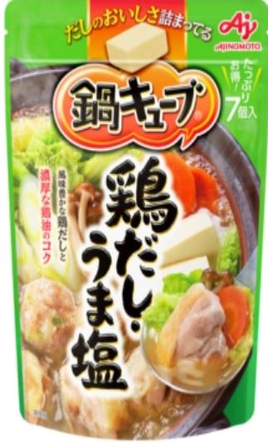
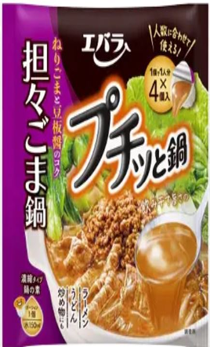
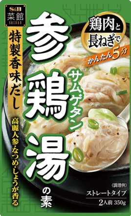
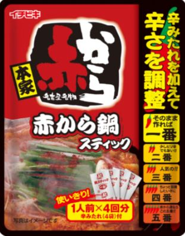
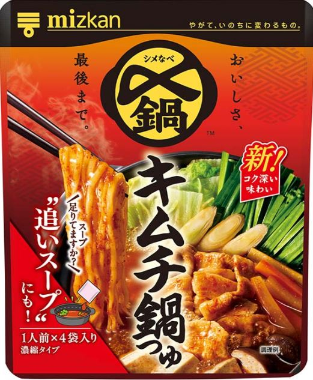
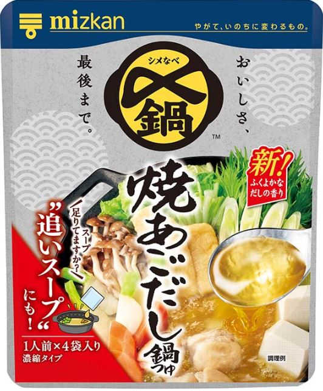

YummyDiary
-日々のなべ日記-
- 25/5/7
- 25/5/8
- 25/5/9
- 25/5/11
- 25/5/12
- 25/5/14
- 52/5/16
- 25/5/17
- 25/5/18
- 25/5/21
- 25/5/22
- 25/6/5
- 25/6/6
- 25/6/12
- 25/6/16
- 25/6/17
- 25/6/17
- 25/6/18
- 25/6/20
- 25/6/20
- 25/6/23
- 25/6/24
- 25/6/24
- 25/7/1
- 25/7/3
- 25/7/4
- 25/7/7
- 25/7/8
- 25/7/8
- 25/7/9
- 25/7/9
- 25/7/16
- 25/7/21
- 25/8/3
- 25/8/5
- 25/8/9
- 25/8/12
- 25/8/13
- 25/8/15
- 25/8/16
- 25/8/19
- 25/8/28
- 25/8/30
- 25/8/31
- 25/9/1
- 25/9/3
- 25/9/4
- 25/9/5
- 25/9/5
- 25/9/6
- 25/9/10
- 25/9/11
- 25/9/12
- 25/9/14
- 25/9/19
- 25/9/28
- 25/10/1
- 25/10/7
- 25/10/8
- 25/10/8
- 25/10/9
- 25/10/10
- 25/10/10
- 25/10/14
- ごま豆乳鍋つゆ（ミツカン）
- ごま豆乳鍋つゆ（ミツカン）
- 赤から（イチビキ）
- 赤から（イチビキ）
- 赤から（イチビキ）
- スンドゥブチゲ（S＆B）
- キムチ鍋の素（エバラ：300ml）
- キムチ鍋の素（エバラ）
- キムチ鍋の素（エバラ）
- キムチ鍋の素（エバラ）
- キムチ鍋の素（エバラ）
- スンドゥブチゲの素（丸大食品）
- スンドゥブチゲの素（丸大食品）
- ミツカンlovers辛旨じゃん
- ミツカンlovers辛旨じゃん
- ミツカンlovers辛旨じゃん
- ミツカンlovers辛旨じゃん
- ミツカンlovers辛旨じゃん
- ミツカンlovers辛旨じゃん
- 鳥だしうましお7個入（味の素）

- 豚骨醬油（ミツカン）
- 豚骨醬油（ミツカン）
- 豚骨醬油（ミツカン）
- 豚みそ（イチビキ）
- 豚みそ（イチビキ）
- 豚骨醬油（ミツカン）
- 赤から（イチビキ）
- 赤から（イチビキ）
- 岐阜タンメン監修塩タンメン鍋つゆ（寿がきや）
- 岐阜タンメン監修塩タンメン鍋つゆ（寿がきや）
- 地鶏だし塩鍋つゆ（ヤマキ）
- プチッと鍋 担々ごま鍋 40ｇ×4個（エバラ）

- 焼あごだし鍋つゆ（ミツカン）
- SUGAKIYA和風とんこつ鍋つゆ（寿がきや）
- SUGAKIYA和風とんこつ鍋つゆ（寿がきや）
- 参鶏湯の素（S＆B）

- キムチ鍋つゆ（イチビキ）
- キムチ鍋つゆ（イチビキ）
- 寄せ鍋つゆ(イチビキ）
- 寄せ鍋つゆ(イチビキ）
- ごま豆乳鍋つゆ(ミツカン）
- ごま豆乳鍋つゆ(ミツカン）
- ごま豆乳鍋つゆ(ミツカン）
- ごま豆乳鍋つゆ(ミツカン）
- ごま豆乳鍋つゆ(ミツカン）
- 赤から(ミツカン）
（小分け4パック入り）
- 赤から(ミツカン）
（小分け4パック入り）
- ちゃんぽん（五木食品）
- 赤から(ミツカン）
（小分け4パック入り）
- 赤から(ミツカン）
（小分け4パック入り）
- 長崎ちゃんぽん（狩野ジャパン）
- キムチ鍋つゆ（ミツカン_小分け4パック）

- キムチ鍋つゆ（ミツカン_小分け4パック）
- キムチ鍋つゆ（ミツカン_小分け4パック）
- キムチ鍋つゆ（ミツカン_小分け4パック）
- 一風堂（ゼンショー）
- 一風堂（ゼンショー）
- 一風堂（ゼンショー）
- ちゃんぽん（五木食品）
- 一風堂（ゼンショー）
- 焼あごだし鍋つゆ（ミツカン_小分け4パック）

- 焼あごだし鍋つゆ（ミツカン_小分け4パック）
- ちゃんぽん（五木食品）
- 焼あごだし鍋つゆ（ミツカン_小分け4パック）
-
ねぎ×きゃべつ×豆腐
→★★★★（4.0）
-
ねぎ×きゃべつ×豆腐
→★★★★（4.0）
-
ねぎ×きゃべつ×豆腐
→★★★★⋆（4.5）
-
右記の残り（ねぎ・きゃべつ・豆腐）×やきそば
→★★★★（4.0）
-
超残り（ほぼ右記入ってない_ねぎ・きゃべつ・豆腐）
→★★★⋆（3.5）
-
ねぎ××豆腐
→★★★⋆（3.5）
生卵 投入
→★★★⋆（3.5）
-
ねぎ×きゃべつ×豆腐
→★★★⋆（3.5）
-
夕方：ねぎ×きゃべつ×豆腐
→★★★⋆（3.5）
夜：豆腐×やきそば
→★★★（3.0）
-
ねぎ×きゃべつ
→★★★⋆（3.5）
-
豆腐のみ
→★★★⋆（3.5）
-
豆腐×やきそば
→★★★⋆（3.5）
-
豆腐
→★★★⋆（3.5）
-
豆腐×焼きそば
→★★★⋆（3.5）
-
豆腐×焼きそば
→★★★⋆（3.5）
-
ねぎ×焼きそば
→★★★★（4.0）汁無くすまで油そばとして
-
ねぎ×焼きそば
→★★★⋆（3.5）ラーメンとして
-
豆腐×焼きそば
→★★★⋆（3.5）ラーメンとして
-
ねぎ×焼きそば
→★★★★（4.0）汁無くすまで油そばとして
-
ねぎ×豆腐
→★★★⋆（3.5）鍋として
-
ねぎ×豆腐
→★（1.0)
-
ねぎ×やきそば
→★★★★（4.0)
-
豆腐
→★★★（3.0)
-
ねぎ×れたす
→★★★⋆（3.5)
-
ねぎ×やきそば
→★★★（3.0)
-
ねぎ×しめじ
→★★★⋆（3.5)
-
ねぎ×きゃべつ×豆腐×しめじ
→★★★⋆(3.5)
やきそば 投入
→★★★（3.0）
-
ねぎ×白菜×豆腐
→★★★★（4.0)
-
（ねぎ×白菜×豆腐）×うどん入れる
→★★★★⋆（4.5)
-
ねぎ×白菜×豆腐
→★★★⋆（3.5)
×うどん
→★★★⋆（3.5）
-
ねぎ×白菜×豆腐
→★★★⋆（3.5)
×うどん
→★★★⋆（3.5）
-
白菜×豆腐
→★★★⋆（3.5)
焼きそば 投入
→★★★⋆（3.5)
-
ねぎ×うどん
→★★（2.0)
-
ねぎ×キャベツ×豆腐×しめじ
→★★（3.5)
うどん投入
→→★★★（3.0)
-
昼：ねぎ×キャベツ×豆腐
→★★★⋆（3.5)
夕方：やきそば投入（ラーメンになる）
→★★★⋆（3.5)
-
ねぎ×キャベツ×豆腐
→★（1.0)
-
ネギ×豆腐
→★★★⋆（3.5）
ご飯投入してクッパ
→★★★⋆（3.5）
-
豆腐×しめじ
→★★★（3.0）
ご飯投入してクッパ
→★★★（3.0）
-
ねぎ×しめじ
→★★（2.0）
-
豆腐×ねぎ×しめじ
→★★★⋆（3.5）※4.0かも審査中
雑炊
→★★★⋆（3.5）※4.0かも審査中
-
(豆腐×ねぎ×しめじの残りのスープ)×うどんいれる
→★★★⋆（3.5）
-
豆腐×ねぎ×やきそば
→★★★⋆（3.5）
-
豆腐のみ
→★★★⋆（4.0）
雑炊
→★★★⋆（3.5）
-
豆腐のみ
→★★★⋆（3.5）
-
豆腐のみ
→★★★⋆（3.5）
-
豆腐×ねぎ
→★★★★（4.0）
雑炊（豆腐×ねぎ）
→★★★★（4.0）
-
豆腐×ねぎ（5辛）
→★★★★⋆（4.5）
ご飯投入してクッパ（5辛）
→★★★★⋆（4.5）
-
豆腐×ねぎ×焼きそば（5辛）
→★★★★（4.0）
ねぎ×しめじ×うどん（5辛）
→★★★★（4.0）
-
シーフード×油_小鍋（太海商事_徳用シーフードミックス）※フライパンではなく小鍋に油を引いてシーフード入れる。蒸す感じ。
→★★★★（4.0）
-
豆腐×ねぎ（5辛）
→★★★★（4.0）
-
（豆腐×ねぎ（5辛）のかなり少ない残り）×焼きそば
→★★★⋆（3.5）
-
シーフード×油_小鍋（太海商事_徳用シーフードミックス）
→★★★⋆（3.5）
-
豆腐×焼きそば
→★★★（3.0）
-
豆腐
→★★★（3.0）
雑炊
→★★★（3.0）
-
豆腐
→★★★（3.0）
おじや
→★★★（3.0）
-
豆腐
→★★★⋆（3.5）
-
豆腐×ねぎ
→★★★⋆（3.5）（辛味ありとなし）
※辛味なし3.5。辛味あり3.5（辛味なしより、ありのが3.5の中で美味い）
-
豆腐×ねぎ
→★★★⋆（3.5）（辛味ありとなし）
※辛味なし3.5。辛味あり3.5（辛味なしより、ありのが3.5の中で美味い）
-
豆腐×ねぎ
→★★★⋆（3.5）（辛味ありのみ）
※辛味を入れて最初から最後まで全部を食べた。
-
シーフード×油_小鍋（太海商事_徳用シーフードミックス）※フライパンではなく小鍋に油を引いてシーフードを入れる。蒸す感じ。
→★★★★（4.0）
-
やきそば×豆腐×ねぎ
→★★★⋆（3.5）（辛味あり）
→★★★（3.0）（辛味なし）
-
豆腐×ねぎ
→★★★⋆（3.5）
-
豆腐×やきそば
→★★★⋆（3.5）
-
シーフード×油_小鍋（太海商事_徳用シーフードミックス）※フライパンではなく小鍋に油引いてシーフード入れる。熟す蒸す感じ。
→★★★★（4.0）
-
豆腐
→★★★★（4.0）
- うまい。ホッとする味。
- 豆腐を追加で入れてうまかった。
ホッとする味。このジャンルでは一番かも。
- うまい。
- やきそばを入れるとラーメンになる。うまいね。
- スープとして食べた。
- 生卵は入れない方がうまい。入れると辛さがまろやかになる。豆腐とねぎでシンプルに食べた。普通にうまい。
- キムチ鍋を5/16-5/22まで食べたけど、使った素の計算が合わなくなった笑 水を1:2で入れるから、素は300mlなのだけど、実質900ml（素300＋水600）が食べられる。
- 夕方と夜で2回食べた。夜はやきそばを入れた。夜は人と電話をしていたから味がよく分からなくなった。やはり食に集中しないとダメ。
- きゃべつとねぎを入れた。スープとして食べた。やはり鍋×ごはんで食べるべき。
- 豆腐だけを入れて食べた。普通にうまかった。豆腐だけなら、まな板も包丁もいらないから楽。豆腐は箸で分解すると良い。
- 豆腐と焼きそばを入れてラーメンにした。30円のやきそばがラーメンになる。普通にうまかった。豆腐もまな板も包丁も使わず。
- 普通にうまい。No1の感じはあまりしない。
- なかなかうまかった。エバラ（キムチ鍋）の焼きそばよりうまい。
- なかなかうまい。
- 美味いな。油そばだ。
- なかなかうまい。ラーメンてかんじ。汁とばさないとラーメンやな
- なかなかうまい。
- 4.0。わかった！！！ エウレカ！！ 最後まで、汁が無くなるまで熱すると、めちゃくちゃうまい4.0になる。汁があるとラーメンになり、3.5。
- 鍋として食べた。普通にうまい。
- 美味しくない。
- めちゃくちゃうまかった。4.0。
- 3.0。
- 味が落ちている。ちゃんと沸騰させたけど。なんか違和感がある。
- 重かった
- 雑炊は卵を入れて3.5。今度、雑炊を食べたら4.0あるかも。
- 鍋は3.5。やきそばを入れると、なんか重い。一番最初に焼きそば入れて食べた時は4.0だったが、なぜだろう。
- うまい。流石。
- 4.5。うまいな！！！。うどんを入れて食べるとうまい！！！！めちゃくちゃうまい。
- うまい。3.5。4.0でもいいかもしれないうまさ。野菜がうまい！確かにパッケージ通り、野菜がうまい
- 豆腐追加で入れた。豆腐うまいな。やはり4.0でもいいかもな。
- ふつうにうまい。3.5。豆腐・白菜まではうまかった。
- 美味しくない。
- 普通にうまい。お茶漬けとして次回食べたい。パッケージ裏面でオススメと書いてある。うどんはおよびじゃなさそうだな。
- 鍋として普通にうまい。
- 8/3に作ったものを8/5に食べたら、味が変になっていた（冷やしたり放置したりしてたから。Oh My God。勉強になったわ。）
- 不思議な商品。
- 普通。
- 美味しくない。
- うまい。鍋も雑炊も4.0ありえるうまさ。4.0に近いの間違いない。4.0（過去の自分にオススメできる。また食べたい）かは精査中。多分また買う。普通にうまい（3.5）とまた食べたい（4.0）の差は半端ないけど、これはその壁を超えてるかも。一旦3.5。
- 普通にうどんもうまいな。
- 普通にうまいが、なんかパックより小分けのほうがあんまりかな。やきそばの麺が合わなかった説もある。
- 豆腐のみだとうまい。4.0。また食べたい。豆腐はまな板で切らず、箸で切ると調理が楽。雑炊もうまい。3.5だけど、また食べたいレベルのうまさ
でも一旦3.5。ちょっとスープ少なくしすぎて卵を入れてご飯を入れたから、もうちょっとスープを残さないとダメだ。スープを飲みすぎた笑
- 人に話しかけられながら食べたため、あまり味が分からなかった。けど普通にうまい。
- 普通にうまい。25/8/30の1パック分の鍋の残りをたべる。
- うまい！！！幸せな味がする。豆腐とねぎだけで、しっかりうまい。4.0。また食べたい。豆腐とねぎ入りの雑炊もうまい！！4.0！！（ちゃんと卵を研いで、ごはんを入れて、菜箸で回転させながら、鍋で温っためるとよりうまいし、焦げないから洗い物も楽）鍋も雑炊も、過去の自分にオススメできる。これは確実にまた買うね。豆腐・ねぎはヒット！！！
- めちゃくちゃ美味い！！天才だわ
過去の自分に超オススメできる。小分けなのも良い。使いやすい。超シンプルにねぎ・豆腐が最高。うまい！！
- うまい！！25/9/3の残りの鍋（豆腐とねぎの残り）に豆腐追加して、やきそばを入れた。うまいわ。うどんも食ったけどうまいね。
- これが最強の作り方。フライパンは洗うのが面倒くさいから使わなくて良い。小さい鍋を使おう。小さい鍋に油いれる（そこそこの量。少なすぎるとだめ。ちょっと多めくらい）。次にシーフードを入れる。かならず蓋して、蒸す感じ。そのあと水300を入れて、沸騰させて、粉入れて沸騰させて、麺を入れて2分で食べる。
ちゃんぽん×俺の食材×俺の作りか=4.0。油の量と蒸すのが大事。油を少なくしたとき、最強の作り方よりは美味しくなかった。スープがうまいな。五木食品に注目。
- うまい。今日は4.0
- 衣笠製麵の麺がうまい！！うまさが残る。
- 普通にうまい。
- 3.0
- 3.0。後味がよくない。
- 3.0。後味がよくない。
- 3.5。普通にうまい。
- 3.5。普通にうまい。
- 3.5。普通にうまい。
- 3.5。普通にうまい。※次食べたら4.0もあるかもしれないが、ミツカンの素が300円だとすると、このゼンショーの鍋の素は400円で約100円高いのがネック。
- うまい！幸せな味がする。本当に作るのが楽。①小鍋に油引く。②冷凍シーフード入れる。③蓋して、鍋で熱する④水300mlを入れる。粉を入れる。⑤沸騰したら麺を入れて、1分半で完成。美味い！！。4.0。また食べたい！
- 辛味いれたら3.5。普通にうまい。辛味なしは3.0。
- 普通にうまい。
- 4.0でも良い気がするな。
- 4.0。シーフードのイカはそんなにうまくないけど、4.0はあるな。この作り方は。
- 4.0やな。豆腐のみいれた。うまかった。
- 1回目
- 2回目（豆乳の素：1回分完了）
- 1回目
- 2回目
- 3回目（赤からの素：1回分完了）
- 1回目（スンドゥブチゲの素：1回分完了）
- 1回目_100ml使ったはずだけど、計算が合わなくて、50mlだったかも。おかしい。妖怪のしわざだ。150ml使おうと思ってら100mlにしたはずなのに。
- 2回目_素50ml×2=100ml使用
- 3回目_素50ml使用
- 4回目_素50ml使用l
- 5回目_素50ml使用（キムチ鍋の素300ml：1回分完了）
- 1回目
- 2回目
- 1回目_素50ml水100ml
- 2回目_素50ml水100ml
- 3回目_素50ml水100ml
- 4回目_素50ml水100ml
- 5回目_素50ml水100ml
- 6回目_素140ml水280ml（素が全部なくなった。）
- 1回目_キューブ2個分（水360ml）
- 1回目_素250ml
- 2回目_素150ml
- 2回目_素350ml（素が全部なくなった）
- 1回目_素250ml
- 2回目_素460ml（素が全部なくなった）
- 1回目_素を全部つかう
- 1回目_素を全部使う
- 2回目
- 1回目_素を全部使う
- 2回目
- 1回目_素を全部使う
- 1回目_1個（水150ml）を使う
- 1回目_素を全部使う
- 1回目
- 2回目_8/3の残り少なった鍋が時間が経ち、味がおかしくなって捨てた。
- 1回目（素を全部使う）
- 1回目（素400mlを使う）
- 2回目（素320mlを使う_キムチ鍋の素（720ml）:全部使い終わる。1回分完了）
- 1回目
- 2回目（素を全部使い終わる。。）
- 1回目_小分け1パックを使う
- 2回目_小分け1パックを使う
- 3回目_小分け1パックを使う
- 4回目_25/8/30の残り分を食べる。
- 5回目_小分け1パックを使う（4パック全部が使いおわった。）
- 1回目_小分け2パックを使っている。
- 2回目_小分け2パック分を使い終わった（残り2パック）。さらに小分け1パック分を使う（残り1パック）
- （※3回位自分で使って編み出した）ここから、25/9/5から1回目とする。（1回目）
- 3回目_小分け1パックを使っている。
- 4回目_25/9/5に作ったスープを使い、使い切った。（これで4パック使い終わった。）（赤からの素 4パック：1回分完了）
- 1回目_25/9/10に1袋分を食べる。
- 1回目_25/9/11に1袋分を食べる。
- 2回目_25/9/12に1袋分を食べる。
- 3回目_25/9/14に1袋分を食べる。
- 4回目_25/9/19に1袋分を食べる。4パックを全部使い終わったた。（4パック入りの素を使い終わる。）
- 1回目_25/9/28に1袋分を食べる。
- 2回目_25/10/1に1袋分を食べる。
- 3回目_25/10/7に1袋分を食べる。
- 25/10/8に1袋分を食べる。
- 4回目_25/10/8に1袋分食べる。_4パック全部つかいおわった。
- 1回目_25/10/9に1袋分食べる。
- 2回目_25/10/10に1袋分食べる。
- 25/10/10に1袋分食べる。
- 3回目_25/10/14に1袋分食べる。